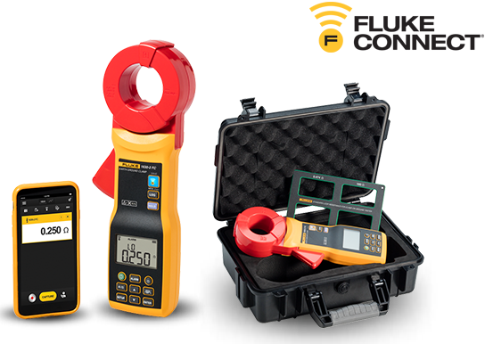
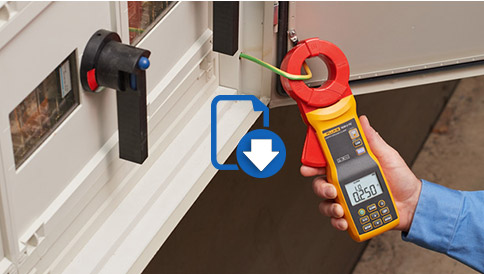

Pinza de resistencia de bucle Fluke 1630-2 FC
Para comprobaciones de resistencia de tierra y de fuga rápidas y seguras en interiores y exteriores

Descubra el motivo por el que las comprobaciones de resistencia de tierra son esenciales para la seguridad personal y previenen los daños en los equipos por causa de rayos y otras situaciones de sobretensión.
Descargue ahora la nota de la aplicación »
Mantenga el equipo en línea. Identifique la resistencia de bucle a tierra sin desconectar el electrodo de tierra del sistema.
© Fluke Corporation. Todas las marcas registradas son propiedad de sus respectivos propietarios. Para compartir datos se necesita WiFi o cobertura de móvil. Smartphone, servicio inalámbrico y plan de datos no incluidos con la compra. Los primeros 5 GB de almacenamiento son gratuitos. Compatible con iPhone 4s y superior, con iOS 8 o posterior; iPad (en un visualización de iPhone); Samsung Galaxy S4 con Android 4.3.x o posterior, y Samsung Galaxy S, Nexus 5, HTC One y One M8 con Android™ 4.4.x o posterior. Apple y el logotipo Apple son marcas registradas de Apple Inc., registradas en Estados Unidos y en otros países. App Store es una marca de servicio de Apple Inc. Google Play es una marca registrada de Google Inc.